Enterprise Platforms
- Part of central IT at IU: UITS
-
Combination of several former groups:
- Systems Integration/Middleware
- Linux Administration
- Database Administration
- Cloud Support
Agenda
- Historical problems and solutions
- Current strategy
- Migration towards the cloud
Problem 1: Connecting back to resources on-prem
- Need access to protected resource
- Networking group maintains Direct Connect / ExpressRoute / etc
- Networking expertise brought in for configuration
- Billing shared among groups utilizing this service
Problem 2: Storage
- So many storage solutions
- On-prem options too expensive
- Moving administrative storage to SaaS solutions like Microsoft Teams
- Assistance with understanding and configuring cloud storage
Problem 3: Understanding cost/funding model
- Well-defined, fixed costs on-prem
- Transition to OpEx model is challenging to navigate
- Varying challenges with resellers
- Bringing visibility with Kion
Problem 4: Availability of on-prem resources
- Need access to assets like our IAM stack
Containerization
- Utilizing containers in production since 2015
- Robust deployment of Kubernetes utilizing
VMware Tanzu - Portability and strong operating model
Types of workloads
- Java, .NET Core, Python, Node,
Ruby on Rails, PHP, etc. - Persistent workloads like databases,
caches, queues, etc. - Supporting services for ingress,
secrets, certificates, etc.
Rethinking development methodology
- Moving towards smaller, stateless applications
- Well defined relationships between infrastructure components
- Templates lower barrier of entry
Exercising container portability
- Workloads can be deployed to multiple clusters
- Need to migrate to new Kubernetes distribution
- Lessen or remove impact on development teams
Migration process
- Heavy use of Helm
- Argo Events
- Argo Workflows
- Kubernetes API
- F5 Load Balancer AS3 API
- Parallelization
- Synchronization
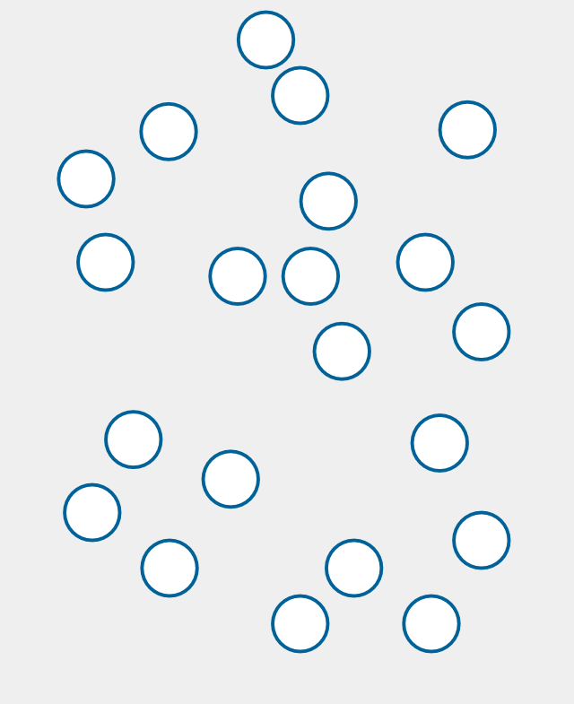
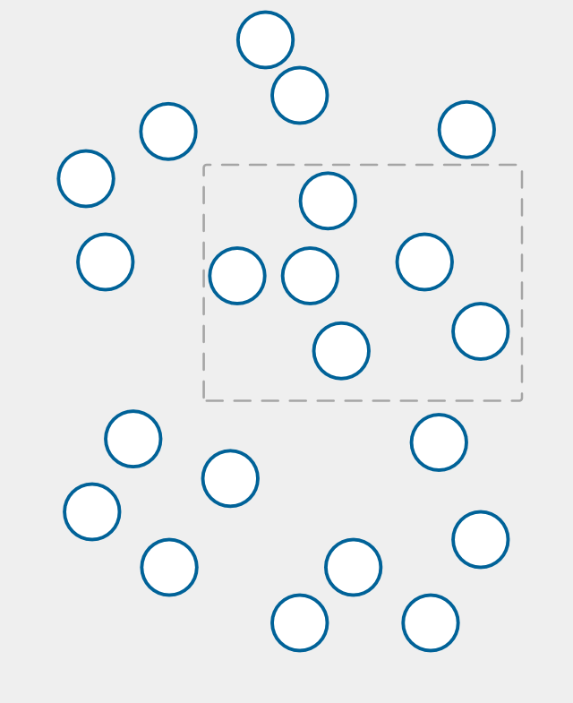
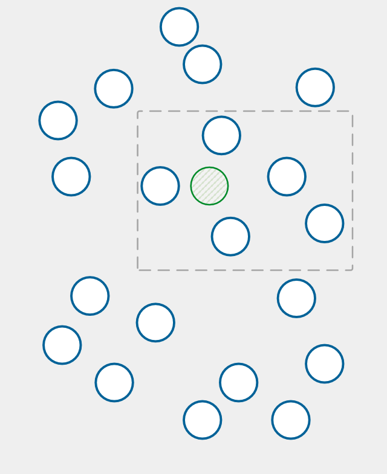
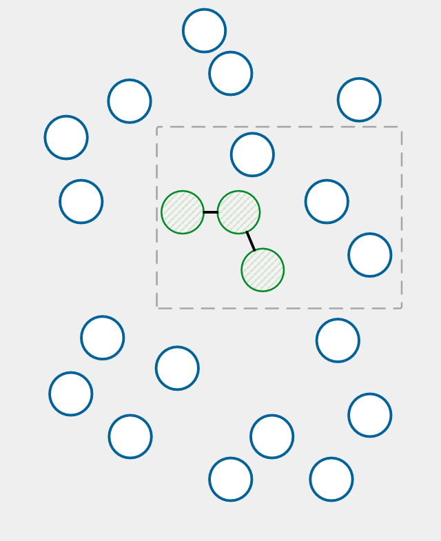
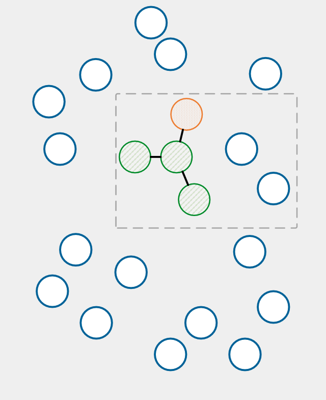
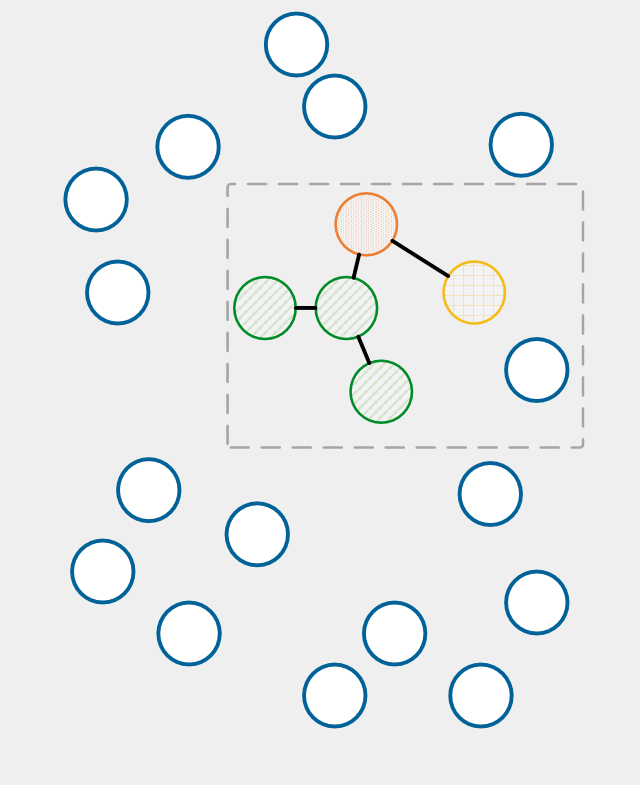
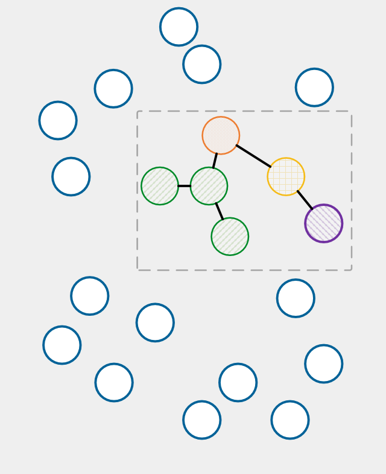
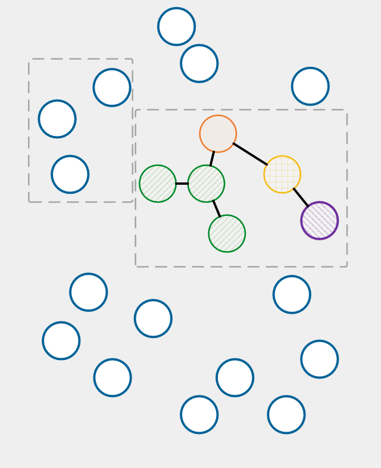
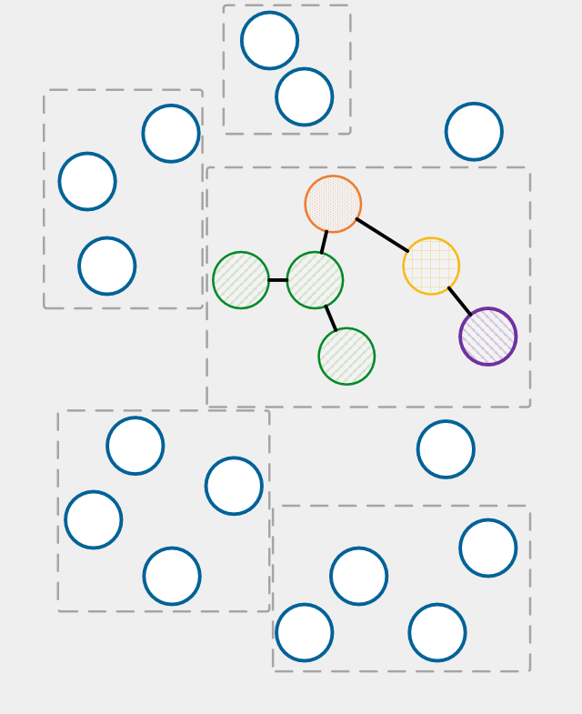
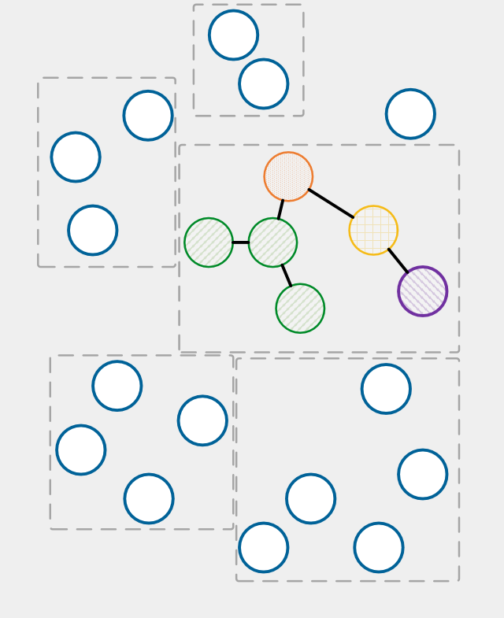
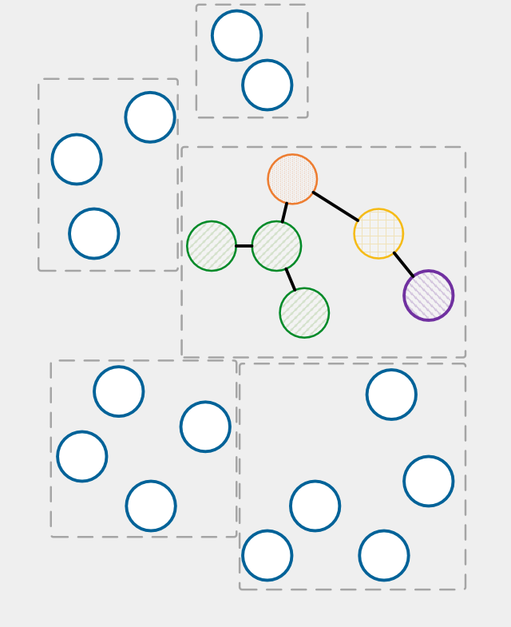
{
"release": "myapp"
"source": {
"cluster": "old-es-test.kube.iu.edu",
"namespace": "ua-vpit/enterprise-systems/ep"
},
"target": {
"cluster": "new-es-test.kube.iu.edu",
"namespace": "ua-vpit/enterprise-systems/ep"
}
}
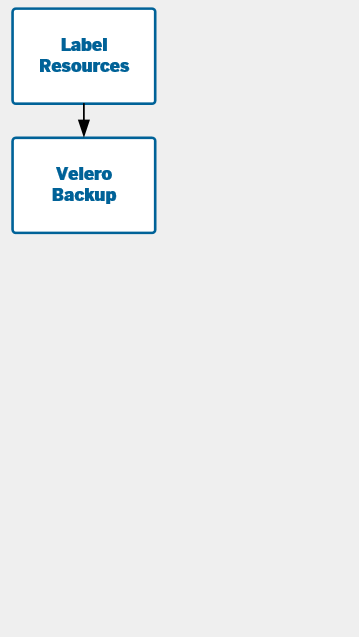
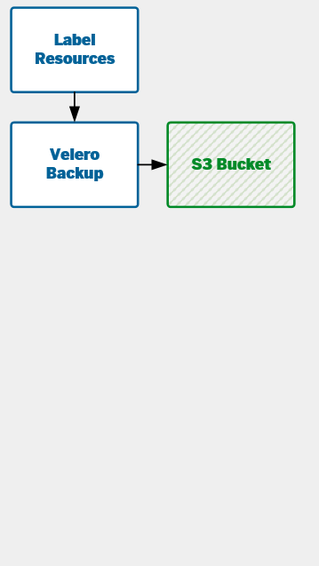
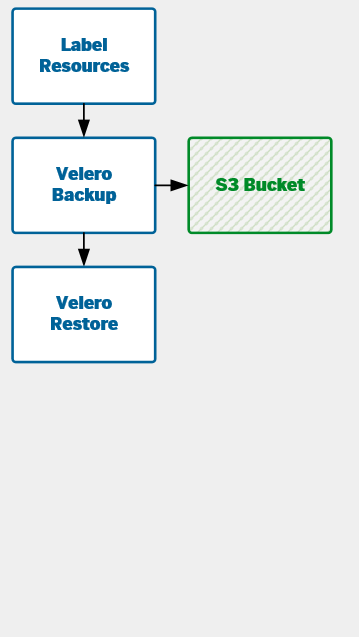
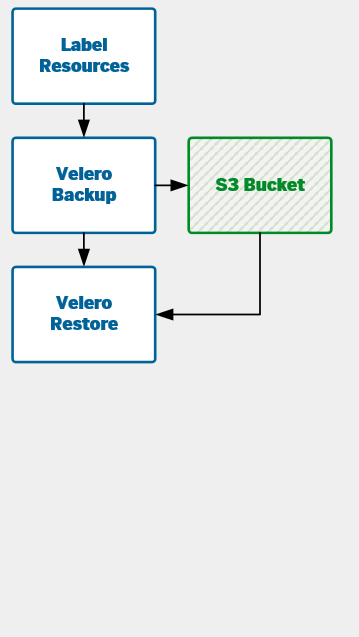
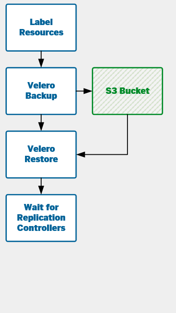
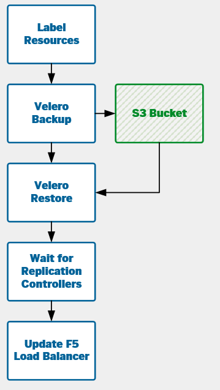
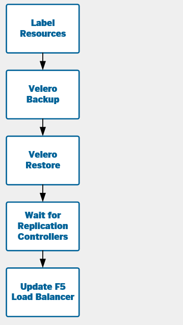
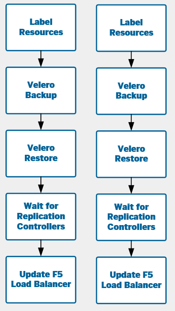
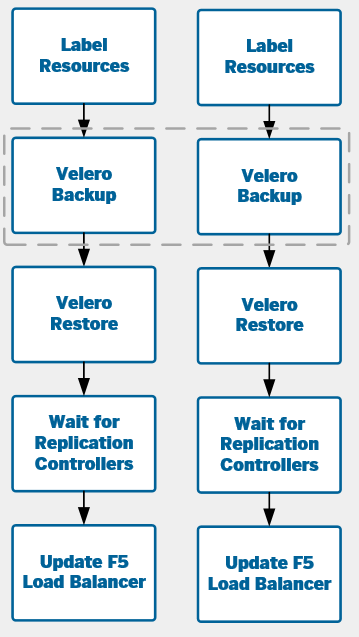
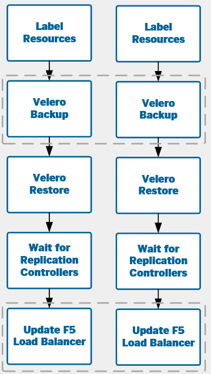
Results
- Migrated 163 Redis clusters in test
(~2,000 containers) - Zero downtime or monitoring alerts
- Future flexibility in maintaining our
workloads - Clusters as cattle
Next Steps
- Tanzu Mission Control for managing
cloud-based Kubernetes clusters - Deploying assets to multiple clusters
- Replicating secrets across clouds
- Lots of fine details to figure out